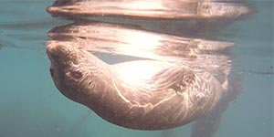

Pacific harbor seals have spotted coats in a variety of shades from white or silver-gray to black or dark brown. They reach five to six feet (1.7-1.9 m) in length and weigh up to 300 pounds (140 kg). Males are slightly larger than females. They are true or crawling seals, having no external ear flaps. True seals have small flippers and must move on land by flopping along on their bellies.
Pacific harbor seals spend about half their time on land and half in water. They can dive to 1,500 feet for up to 40 minutes, although their average dive lasts three to seven minutes and is typically shallow, and they sometimes sleep in the water. They are opportunistic feeders, eating sole, flounder, sculpin, hake, cod, herring, octopus, and squid. While harbor seals swim safely in the surf, they will often curiously watch humans walking on beaches. However, they are wary of people while on land and will rush into the water if approached too closely or disturbed.
| Age Class | Male | Female |
|---|---|---|
| Pup | < 1 month | < 1 month |
| Weaner | 1-12 months | 1-12 months |
| Yearling | 1-2 years | 1-2 years |
| Juvenile | n/a (classified as subadults) | n/a (classified as subadults) |
| Subadult | 2-3 years | 2-3 years |
| Adult | 3+ years | 3+ years |
